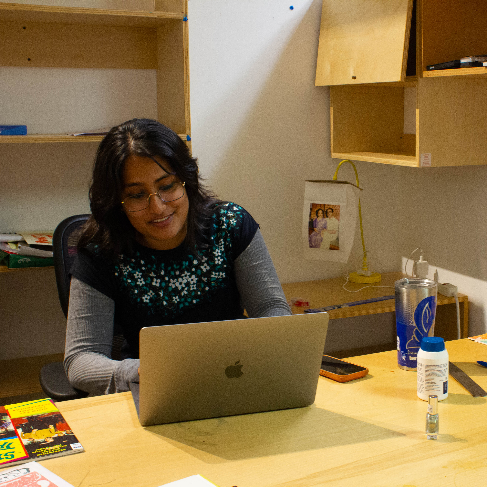
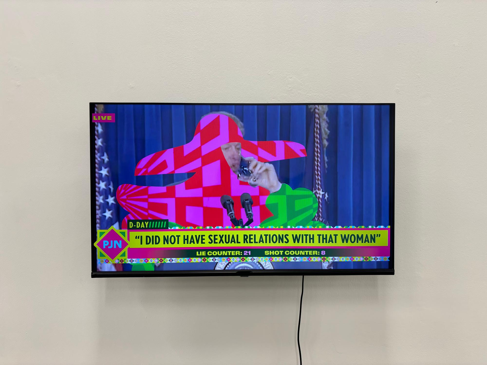
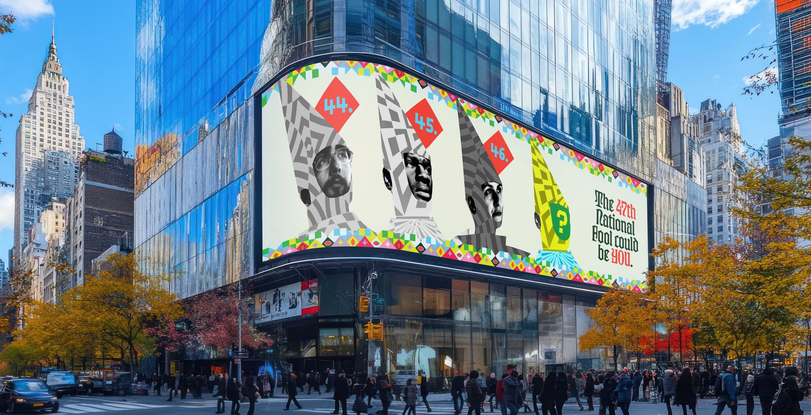
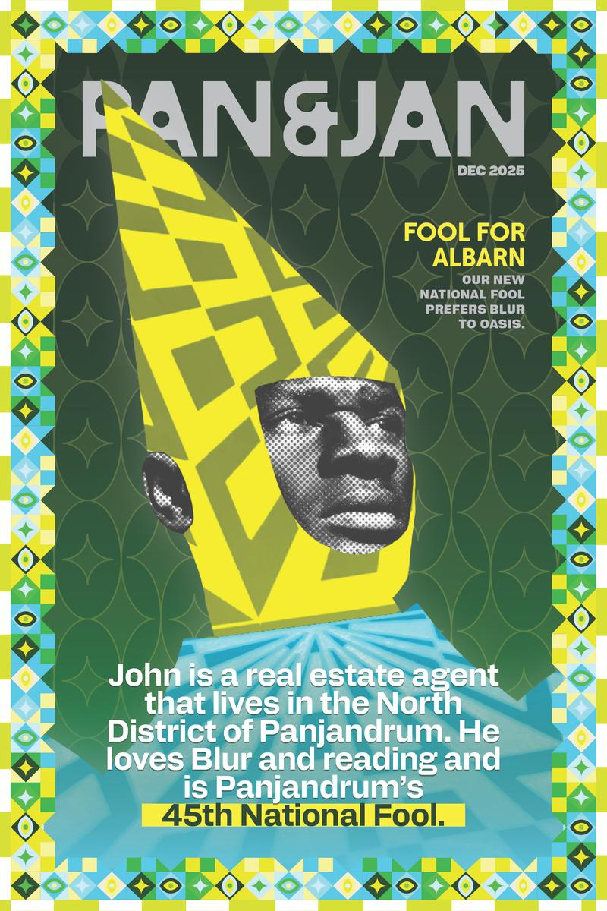

Amal Gupta
Imagining alternative futures.

Interview by: Angel Gutierrez
October 15, 2026
Illustrator, designer, science fiction enthusiast, and former neuroscientist.
What's the craziest thing that's happened to you?
Oh. Brother. Nothing happens to me. I am famously boring. I have no stories. I don't even know what my friends say to people when they talk about me because it's like, what the fuck do you say? I don't know. I'm sure things have happened to me.
PanBanner
What's a project that you did at CalArts that surprised you, and what did you discover in that process?
I don't know if you've heard, in our MFA year we do this project called Brand New World, where you basically have to design your own country...I think a lot of people approached it in a way where it was like, “What kind of country should I make?” And I was more like, “What kind of country do we live in now?” It was doing a play on that. I did this thing where I combined American governmental systems with absurdity and what democracy actually looks like, even if it sounds ridiculous. I did this thing where the presidential race would be determined by nationwide lottery. The person picked would be treated as a national fool, where we remind politicians that politics shoulnd’t be an ego trip and we turn it into a humiliation ritual. Where it’s supposed to remind them that they should be in service to the people, you're our bitch.
“It's like, what kind of future I would want to see and then designing for that.”

Uniforms
What in your interests inspire you the most when designing?
That's a good one. I think it is a lot of the stuff I read. I read a lot of 60s sci-fi. Phillip K. Dick. Arthur C. Clark. Isaac Asimov. I think it's a lot of what I was talking about. Me and you are both interested in like, speculative design and alternative futures, and that's what I look to the most. It's like, what kind of future I would want to see and then designing for that.

News
Is there something you often find yourself struggling with in your work?
I realize this now, I struggle a lot with really open ended projects. I've gotten so used to the fact that with MFA briefs, they're like, 'you should make this'. But there's always a framework to go off of, there's guardrails and I've figured out that I really need that. I'm trying to get used to not having that. Otherwise I overthink myself to this stupid spiral where I'm like, I can't make anything.
“It gets to a point where you kind of have to look at all the shit you’re thinking about and narrow it down all the way to something super specific so you can’t fuck it up. "
I wanted to talk to you about your work at work. What about that experience can you talk about? How does the studio dynamic compare to CalArts?
I feel like I'm very lucky when it comes to this. First of all, I've been wanting to work at a video game company for fucking ever and it was like, “Oh I'm never going to work at a video game company. That's never going to happen to me.” And then it did. I'm also lucky in the sense that my supervisor and my boss are the coolest people ever. I can tell you this because it was in the job description when they posted it, but I'm a signage designer for the video game. They're working on two major games right now, and all the in-game signs, billboards, whatever, that's my job. How that works is my boss, Lazlo, he’s the guy who wrote for Red Dead, GTA, he's the guy who writes all the store front names, what kind of signs goes on the stores, and I'll translate all of his writing into a sign or a logo, or whatever. He gives me a bunch of briefs and that's kind of what I do. And it's been great because I've always been more of an illustrator anyways, but now I have this CalArts knowledge of type and how to design logos that I can apply to it. It is more illustrative work. I'm hand drawing most of it.

Billboard
How have you seen your creative practice change over the course of your time at CalArts?
I feel like I'm smarter with my time. That's probably not true at all. I'm gonna say it anyways. Or it's like, oh, it's been two and a half years, if I don't have a grip on my creative process by now, it's like, what the fuck am I doing? But I kind of feel like, I think school is the most important for taste.

Magazine
What are you reading right now?
I’m reading UBIK by Phillip K. Dick. I read a couple Phillip K. Dick books. Man of the High Castle, and then Blade Runner, or Do Androids Dream of Electric Sheep, the original title. His approach to writing and alternate futures is super fucking interesting. He’s not an incompetent writer which is what you usually see with like 60s and 70s science fiction writers. It’s like guys who are into science who decide they’ll do creative writing, so their ideas are really awesome, but the way they write makes you want to pull your hair out. It’s like, bro, first of all, you can’t write women, which Phillip K. Dick can’t either. It’s like, oh my god, you also can’t tell a story in a cohesive way, which sucks because this is actually a really cool idea. UBIK is really fucking weird. It’s good.

UBIK by Phillip K. Dick
What’s a hobby you’ve always wanted to try but haven’t had the chance to yet?
Oh my god. Sewing. I want to make clothes so bad, but then I’m like, I don’t have time for this. And then I just don’t do it. It’d be awesome though. It’d be sick. I’d love to paint more. I stopped painting after 16. I was really good. I was really awesome. Some of these fine artists, they got nothing on me.